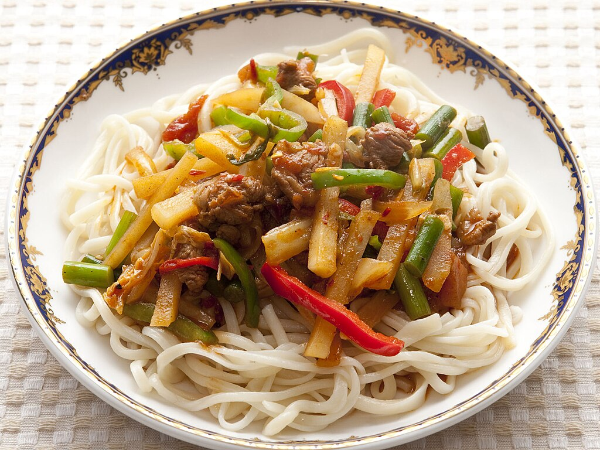

Laghmon Recipe

Description
Laghman is a beloved traditional Uyghur dish hailing from the Xinjiang region of China. This hearty and flavorful dish centers around long, hand-pulled wheat noodles that are thick and chewy, often referred to as 'laghman noodles.' These noodles are combined with a variety of protein options, including beef, lamb, chicken, or seafood, and stir-fried alongside a medley of colorful vegetables like bell peppers, tomatoes, onions, and garlic. The dish is seasoned with a blend of aromatic spices, such as cumin, coriander, and black pepper, giving it its distinct and savory taste. Depending on the variation, laghman may be served with a flavorful broth or sauce or as a dry noodle dish. Garnished with fresh herbs and a hint of citrus, laghman offers a delightful and satisfying culinary experience.
Dough Ingredients
-
1 cup of warm water
-
1 Tbsp salt
-
2 eggs
-
3.5 cups of all purpose flour
-
8 cups of water to cook the dough
-
2 Tbsp salt
-
2 Tbsp oil
Soup Ingredients
-
1/2 lb beef chuck (I use top round roast)
-
1/2 oil
-
1 medium onion
-
1 green bell pepper (I mostly use half yellow, half green pepper)
-
1 medium carrot
-
3 small potatoes
-
3 large cloves of garlic
-
1 medium tomato
-
1 tsp tomato paste (optional)
-
1/2 tsp black pepper
-
1 tsp ground cumin
-
2 tsp salt
-
8 glasses of water
Directions for Dough
-
In a medium bowl mix warm water, eggs, salt well. Add flour and knead the mixture for 10-15 minutes, creating a nice, springy dough.
-
Make the dough round and cover with a plastic wrap or with the container it was kneaded in. Let the dough rest for 15-20 minutes.
Directions for Soup
-
Meanwhile, prepare the ingredients of the soup. Wash all of the vegetables. Cut onions in 1/4 inch half circles. Cut peppers in 1 inch thick strips.
-
Julienne carrots thinly. Peel the skin off potatoes, wash them and cut them in bigger cubes.
-
You can use minced garlic, but I prefer to chop it, because it tastes better that way. Slice the tomato thinly. Julienne the meat.
-
Pre-heat your Wok on high heat, add oil. Toss the julienned meat into the Wok and stir-fry until light-brown. Add the onions to the meat. Add spices (black pepper, cumin, salt) and stir fry until onions are golden in color.
-
Add the tomato, tomato paste and half of the chopped garlic. Mix everything well and stir-fry until tomatoes are nicely soft.
-
Add the remaining vegetables. Mix well and stir-fry for another 4 minutes. You are frying everything on high heat, so do not forget to keep stirring the ingredients. Otherwise, they might stick to the bottom of the Wok. Add water and turn the heat down to medium. Let the soup simmer for 40 minutes. Tip: I always pre-boil water for these kinds of soups. In about 20 minutes, add the remaining garlic:
Rolling the dough
-
Boil water in a bigger container, add salt and keep it simmering until the dough is ready to be cooked. Take out the dough and cut it in two equal portions. Keep one of them under the plastic wrap. Take out the other and roll it until you have a big, thin circle. Use flour generously to prevent the dough from sticking.
-
Sprinkle the flour on the dough one more time and roll the dough to the rolling pin loosely. Slide the rolling pin out from one end, creating a tube from the dough. With a sharp knife make 1/2 inch cuts on the tubed dough. Loosen the strips and stretch them out in order to have even, thin noodles. You can also cut the strips thinner than 1/2 inches.
-
Make sure the water is boiling. Carefully immerse the ready noodles in the water. Cook the noodles for 3 minutes. When time is up, take out the noodles and rinse them in cold water for 10 seconds.
-
Place the ready noodles in a container or a big dish, add 1 Tbsp of oil and evenly distribute it. This will prevent the noodles from sticking to each other. Continue with the second batch of the dough and use the remaining 1 Tbsp of oil for those noodles.
-
Add some noodles to a soup bowl (we use Uzbek traditional soup bowls) and simply pour the hot soup over the noodles and you are ready to go! Serve with your favorite herbs. I love it with scallions and my husband likes to add a little Sriracha hot sauce and a dash of vinegar.